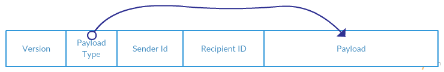
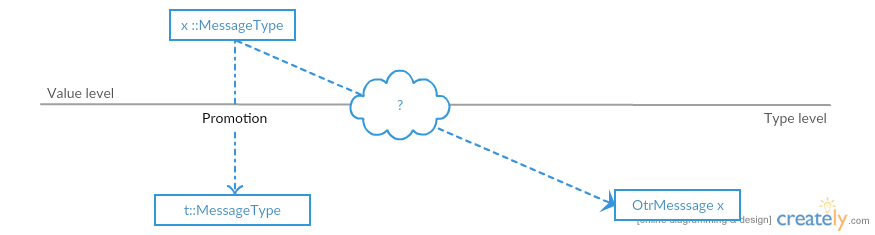
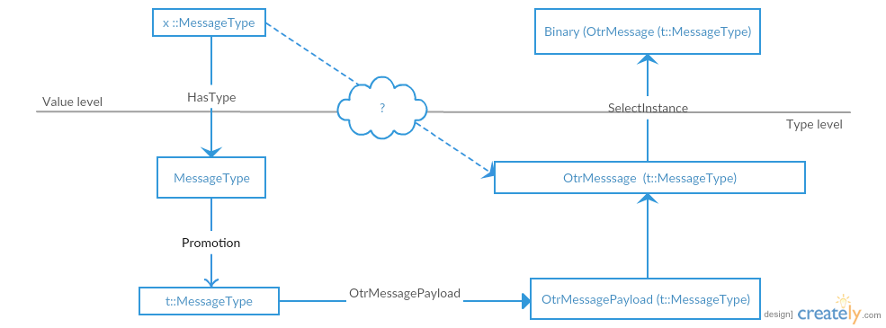
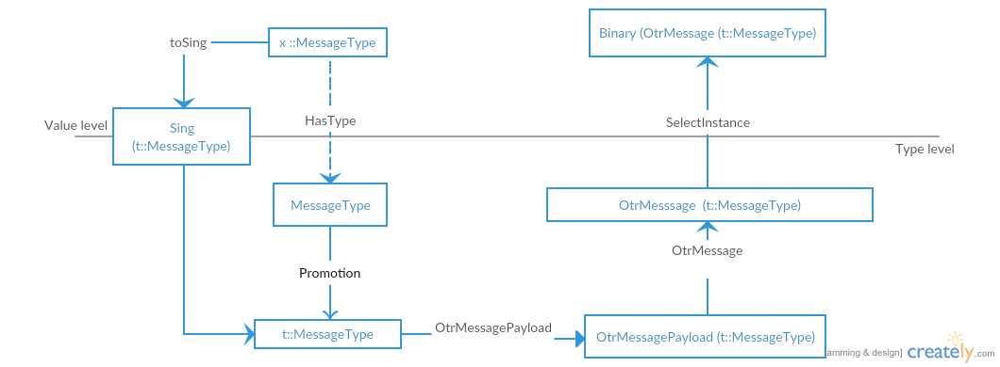

Десериализация с зависимыми типами (простая версия)
date = fromGregorian 2016 jan 06
category = "Теория"
tags = ["зависимые типы", "семейства типов", "сорта", "сериализация"]
Задача появилась в сети juick у @ndtimofeev. Соответственно основная часть кода, не относящегося к сериализации, принадлежит ему. Переформулированная задача: есть формат данных из сети, а именно Otr сообщение, в котором передается заголовок, описывающий тип данных (payload), передаваемый далее. Варианты типов являются закрытым множеством.

Хотелось бы создать для таких сообщений удобное внутреннее представление, которое будет предоставлять гарантии безопасности, удобный API и невысокие дополнительные расходы, и позволяющее сериализовать и десериализовать сообщения.
Для начала рассмотрим самое простое решение, работающее во многих случаях
data AnyPayload = DiffieHellmanCommit ...
| DiffieHellmanKey ...
| DataMessage ...
data AnyOtrMessage = AnyOtrMessage Word16 Word32 Word32 AnyPayloadЗдесь мы определяем простой алгебраический тип данных, описывающий варианты payload. Для такого представления
достаточно просто написать необходимые инстансы Binary. Также такой тип не требует особых знаний языка при
его написании и поддержке кода.
Однако тут возникают некоторые проблемы:
- Даже если мы знаем тип приходящего сообщения (определяется протоколом), то нам все равно нужно читать
AnyOtrMessageи рассматривать все кейсыAnyPayload. Эту проблему можно облегчить, если использовать линзы, но полностью она решена не будет. - Из-за дополнительной косвенности вызовов накладываются дополнительные расходы.
Попробуем найти другое решение, которое позволит решить данные вопросы. В целом нам бы хотелось получить некоторое
представление OtrMessage, параметризованное типом payload, и SomeOtrMessage для случая, когда тип сообщения не
известен.
Замечу, что в посте есть небольшое количество диаграмм, данные диаграммы не относятся к ТК, как бы ни хотелось автору, однако общие идеи взяты из идей отображения категорий. Если у кого-либо из читателей возникнет желание поправить диаграммы так, чтобы они были более точными, то это всячески приветствуется.
Сначала введем тип данных, описывающий варианты payload.
data MessageType = DiffieHellmanCommit
| DiffieHellmanKey
| RevealSignature
| Signature
| DataMessage
deriving (Eq,Show)Для данного типа просто написать Binary инстанс. Единственное, что в нём можно было бы улучшить, это описать
константы более декларативно, но этого мы коснёмся далее.
instance Binary MessageType where
get = flip fmap getWord8 $ \case
0x03 -> DataMessage
0x02 -> DiffieHellmanCommit
0x0a -> DiffieHellmanKey
0x11 -> RevealSignature
0x12 -> Signature
_ -> fail "Unknown Tag"
put DataMessage = putWord8 0x03
put DiffieHellmanCommit = putWord8 0x02
put DiffieHellmanKey = putWord8 0x0a
put RevealSignature = putWord8 0x11
put Signature = putWord8 0x12Теперь хотелось бы сделать так, чтобы значение типа MessageType определяло бы payload в OtrMessage, в котором
он хранится. Сложность тут заключается в том, что значение хранится “на уровне значений”, т.е. во время исполнения,
а тип payload на уровне типов, т.е. во время компиляции. Если тип payload будет определен, то мы сможем
получить соответствующий этому типу сериализатор.
Для того, чтобы построить такую связь, нам надо поднять информацию о конструкторах MessageType на уровень типов.
Это возможно благодаря расширению DataKinds.
Данное расширение позволяет определять новые сорта (kinds), соответствующие типу данных и населенные конструкторами
данного типа. Т.е. на уровне типов мы можем создать параметризованный другим типом сорта MessageType,
который может принимать значения (на уровне типов 'DiffieHellmanCommit, 'DiffieHellmanKey,…).
Таким образом мы получаем диаграмму

Имея информацию о конструкторах MessageType на уровне типов, мы можем построить отображения этой информации в типы
данных, которые хранятся в сообщении. Т.к. это операция на уровне типов, то мы её можем записать при помощи одного из
следующих методов:
- Классы типов с функциональными зависимостями
- Открытые семейства типов
- Закрытые семейства типов
- Семейства данных
Классы типов и открытые семейства типов полезны в случае, если у нас есть открытое множество типов сообщений (это не наш случай). Также семейства типов и классы типов могут использоваться в том случае, если нам необходимо создать связь с уже написанными в другом месте типами (не наш случай). Также семейства типов, даже закрытые, не являются инъективными, т.е. имея выражение \(F(X)=Y\) и зная \(Y\), мы не можем восстановить тип \(X\). Семейства данных решают нашу проблему и не вносят доп. ограничений. В принципе ту же задачу можно решить и при помощи классов типов с функциональными зависимостями, но код в этом случае будет немного сложнее для написания, и при этом случаев, где (CTFD) имеют дополнительные полезные свойства, в задаче не возникает.
Инъективность полезна, если наш тип будет использоваться только в ковариантной позиции, в этом случае, если преобразование
не инъективно, значение типа не является достаточной информацией для вывода всех типов. А в данной задаче это важно при
написании хотя бы инстансов Binary.
Т.е. для решения задачи мы можем определить семейство данных, которое создает однозначное соответствие между конструктором
MessageType на уровне типов и типом данных (и его конструкторами).
data family OtrMessagePayload (a::MessageType) :: *И реализуем несколько сообщений
data instance OtrMessagePayload 'DiffieHellmanCommit = MkDiffieHellmanCommit { encryptedGX :: !ByteString, hashedGX :: !ByteString}
deriving (Eq, Show, Generic)
data instance OtrMessagePayload 'DiffieHellmanKey = MkDiffieHellmanKey { gY :: MPI }
deriving (Eq, Show, Generic)
-- Binary instances
instance Binary (OtrMessagePayload 'DiffieHellmanCommit)
instance Binary (OtrMessagePayload 'DiffieHellmanKey)Для того, чтобы не писать громоздкие имена, можно ввести немного синонимов типов:
type DiffieHellmanCommit = OtrMessagePayload 'DiffieHellmanCommit
type DiffieHellmanKey = OtrMessagePayload 'DiffieHellmanKeyТеперь все готово для создания типа, описывающего OTR сообщение:
data OtrMessage payload = OtrMessage
{ protocolVersion :: !Word16
, senderInstanceTag :: !Word32
, receiverInstanceTag :: !Word32
, messagePayload :: !(OtrMessagePayload payload)
}Т.к. одно из полей - это выражение на уровне типов, то мы не можем воспользоваться механизмом автоопределения
реализаций классов типов. Поэтому используем расширение StandaloneDeriving (и UndecidableInstances, т.к.
инстанс имеет форму отличную от (C1 x, C2 x,...) => Eq x)
deriving instance Eq (OtrMessagePayload payload) => Eq (OtrMessage payload)
deriving instance Show (OtrMessagePayload payload) => Show (OtrMessage payload)Казалось бы уже все готово, т.к. у нас есть диаграмма: 
Однако, все не так и хорошо, т.к. часть выражений в диаграмме у нас присутствует только на уровне типов,
таким образом, если у нас они в программе статически известны, то мы можем переходить по стрелкам и получать
OtrMessage (..) и инстансы для него. Но наша задача состоит в том, чтобы суметь осуществить этот выбор,
стартуя с уровня значений, где у нас есть определенное значение типа MessageType.
Существуют различные способы связи уровня значений с уровнем типов, один из наиболее базовых вариантов -
это создание Proxy значения. Proxy - это такой тип, который полиморфен по сортам. Таким образом, в случае если
хочется передать тип на уровне значений, то можно воспользоваться этим типом и создать Proxy :: Proxy a,
в этом случае при использовании данного прокси в контексте появится тип a. Однако этот способ не
решает противоположного направления.
Для полноценного решения этой задачи существуют синглетоны. Синглетоном называется объект, для которого существует однозначная связь между значением и типом.
Рассмотрим несколько простых примеров:
0 - Тип с 0 конструкторов, например,
Voidна уровне значений соответствует отсутствующему значению на уровне типов (или значениюabsurd, которое всегда расходится)1 - Тип с одним конструктором, например,
()имеет тривиальное соответствие уровня значений и типов.2 - Тип значений с двумя конструкторами, например,
Bool. Рассмотрим, как тут можно ввести связь: у типа Bool есть 2 значение True и False, рассмотрим, как ввести соответствие, мы введем data family
data family Sing (a::k) :: *
data instance Sing 'True = STrue
data instance Sing 'False = SFalseВ этом случае для STrue и SFalse будут однозначные соответствия со значениями на уровне типов и уровне значений (см. 1).
Теперь остается сделать транзитивное соответствие True <-> STrue <-> Sing (k::STrue) (методы fromSing и toSing). Данный метод (более формализованный)
используется в пакете singletons, но в случае если возможности пакета не нужны, то можно сделать вариант попроще.
- N - Тип значений с неограниченным числом конструкторов, например,
Positive Integer– имеет однозначное соответствие сNatна уровне типов, илиString– имеет однозначное соответствие сLiteralна уровне типов.
В нашем случае у нас есть \(k=5\) конструкторов и можно просто воспользоваться библиотекой singletons для генерации необходимых данных.
import Data.Singleton.TH
$(genSingletons [''MessageType])сгенерирует необходимый исходный код.
Мы получаем следующую диаграмму: 
Теперь, когда все красивые и ненужные картинки нарисованы, то можно и написать реализации методов.
Для начала определим функцию получения заголовка, данная функция будет считывать заголовок и возвращать
полученный там тип сообщения MessageType и функцию создания Otr сообщения. Обратите внимание на forall
в сигнатуре, он говорит, что данный тип не должен специализироваться и возвращается полиморфная
функция, которая может быть специализирована по месту применения (причем с разными типами при разных применениях).
otrHeader :: Get (MessageType, forall payload . OtrMessagePayload payload -> OtrMessage payload)
otrHeader = do
v <- short
t <- get
s <- int
r <- int
return (t, OtrMessage v s r)Имея в наличии otrHeader, мы можем определить Binary инстанс для сообщения, в котором
мы пройдем по созданным нами стрелкам в диаграмме:
instance (Binary (OtrMessagePayload a), SingI a) => Binary (OtrMessage a) where
get = magic Proxy
where
magic :: SingI a => Proxy (a::MessageType) -> Get (OtrMessage a)
magic proxy = do
(tag, f) <- otrHeader
let wanted = fromSing (singByProxy proxy) :: MessageType
guard (tag == wanted)
f <$> get
put m@(OtrMessage v s r p) = do
putWord16be v
put (fromSing $ singByProxy m)
putWord32be s
putWord32be r
put pТут интересно это использование magic (можно заменить расширением ScopedTypeVariables), он
используется только для того, чтобы ввести прокси типа, соответствующего возвращаемому.
Тут т.к. мы знаем тип сообщения, которое мы хотим получить, то мы можем на уровне типов определить
соответствующий ему MessageType, по этому типу создать Proxy значение (на уровне значений),
по нему создать Singleton тип, по нему Singleton значение и сравнить с тем MessageType, который
хранится на уровне значений, если они совпадают, то мы читаем значение правильного типа.
Совершив данную проверку мы можем просто применять функцию из otrHeader к десериализации
payload; типы и инстансы нам уже известны.
Binary (OtrMessage (k::m)) --> OtrMessage (k::m) ---> (k::m) ----------> OtrMessagePayload k type-level
---------------------------------------------------------------------------------------------------------------
| | value-level
Proxy k Get (OtrMessagePayload k)
| |
Sing k Get (OtrMessage k)
|
K::mВ случае с put все проще: само OTR сообщение является прокси типом для типа a, по нему мы можем
построить синглетон и получить значение, которое и сериализуем.
Данный инстанс позволяет читать сообщение, тип которого мы знаем, и не позволяет конструировать
сообщения, для которых необходимого Binary инстанса нет.
Для завершения остается последний шаг - уметь читать произвольное сообщение. Для этого есть два основных варианта: 1. использование экзистенциальных типов. 2. использование ADT.
Первый вариант нужно использовать, если там не известно точное число вариантов или множество сообщений является открытым. Поэтому мы просто построим ADT:
data SomeOtrMessage
= DiffieHellmanCommitTag (OtrMessage 'DiffieHellmanCommit)
| DiffieHellmanKeyTag (OtrMessage 'DiffieHellmanKey)
| RevealSignatureTag (OtrMessage 'RevealSignature)
| SignatureTag (OtrMessage 'Signature)
| DataMessageTag (OtrMessage 'DataMessage)
deriving (Eq,Show)И напишем для него инстанс Binary, ниже описан только метод get, т.к. put - это просто вызов
метода put из инстанса выше для соответствующего сообщения:
get = do
(t, mk) <- otrHeader
case toSing t of
SomeSing g@SDiffieHellmanCommit -> DiffieHellmanCommitTag . mk <$> magic g
SomeSing g@SDiffieHellmanKey -> DiffieHellmanKeyTag . mk <$> magic g
SomeSing _ -> fail "Type do not have binary instance."
where
magic :: Binary (OtrMessagePayload k) => Sing k -> Get (OtrMessagePayload k)
magic _ = getЗдесь ситуация обратная: нам не известен тип результата, зато нам известен конструктор MessageType
в сообщении, по нему мы можем построить Singleton type (toSing t) и явно сделать матчинг
по всем вариантам (ghc напишет предупреждение, если какой-то из вариантов упущен), т.к. семейство
типов закрытое
(A::MessageType) --- Sing A Get (OtrMessagePayload A) value-level
------------------------|-----------------------------|---------------------------
(A::MT)------------------(OtrMessagePayload A) type-levelВот в общем-то и все.
Напоследок хотелось бы обсудить несколько вопросов, вспомним нашу диаграмму.
Т.е. мы знаем, что если есть две стрелки, то должна существовать и их композиция, в этом случае, наверное,
можно было бы избежать создания отношения OtrMessagePayload и сделать соотношение между типами синглетонами и
OtrMessagePayload напрямую, однако это невозможно выразить в Haskell, т.к. результаты, полученные при применении семейств данных,
нельзя применять в других семействах.
Также достаточно очевидно, что между конструкторами MessageType и десериализаторами Get (OtrMessagePayload (x::MessageType))
существует однозначное соответствие через те же singleton типы, однако эта связь также невыразима средствами,
доступными в Haskell.
Сам исходный код может быть найден на gist, также в истории хранятся эксперименты с другими подходами, показавшимися автору менее удобными.
Заключение: у автора, к сожалению, ещё недостаточный опыт работы с зависимыми типами и синглетонами, поэтому если у кого появятся заметки, как упростить решение или сделать его лучше, то это так же очень приветствуется.